Cine consumă în România
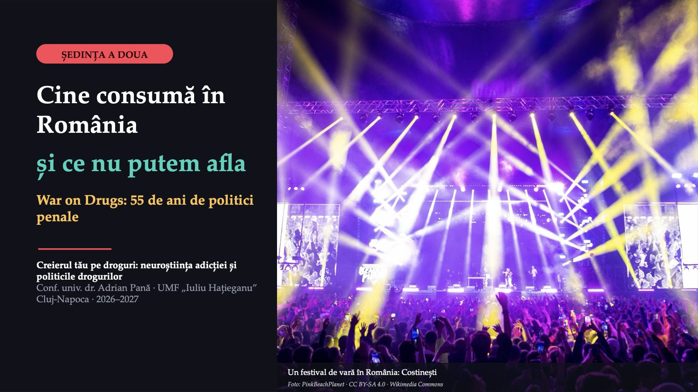
1 / 41Ce mi-ați spus
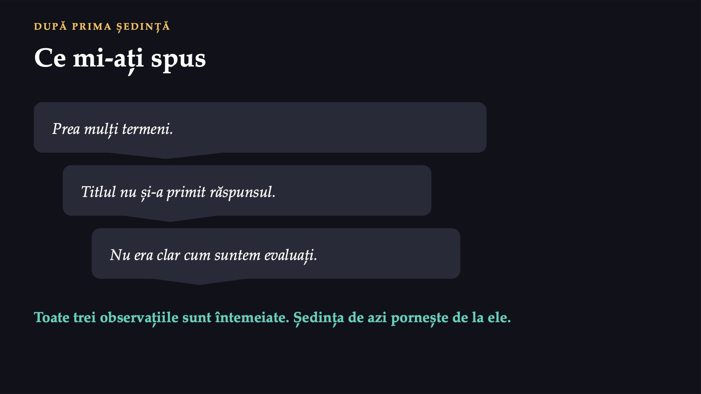
2 / 41Ce se schimbă de azi
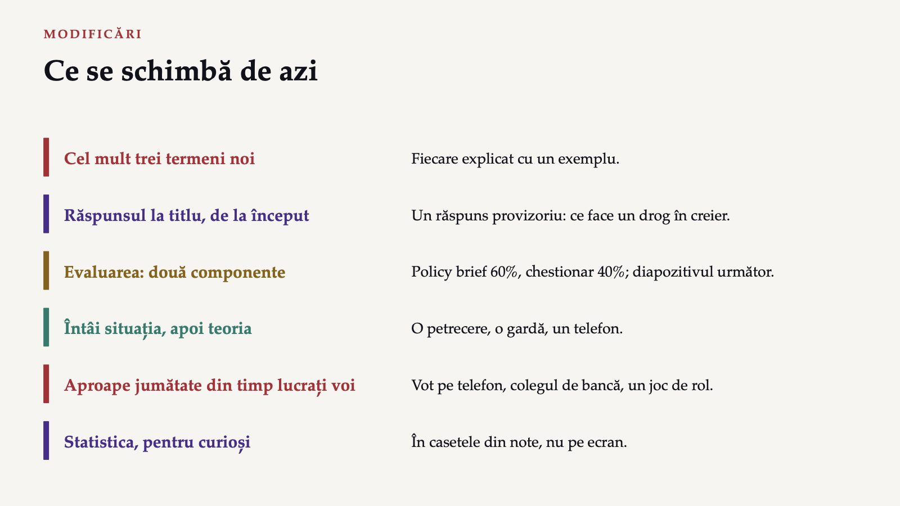
3 / 4160%
 4 / 41
4 / 41Un weekend, trei povești
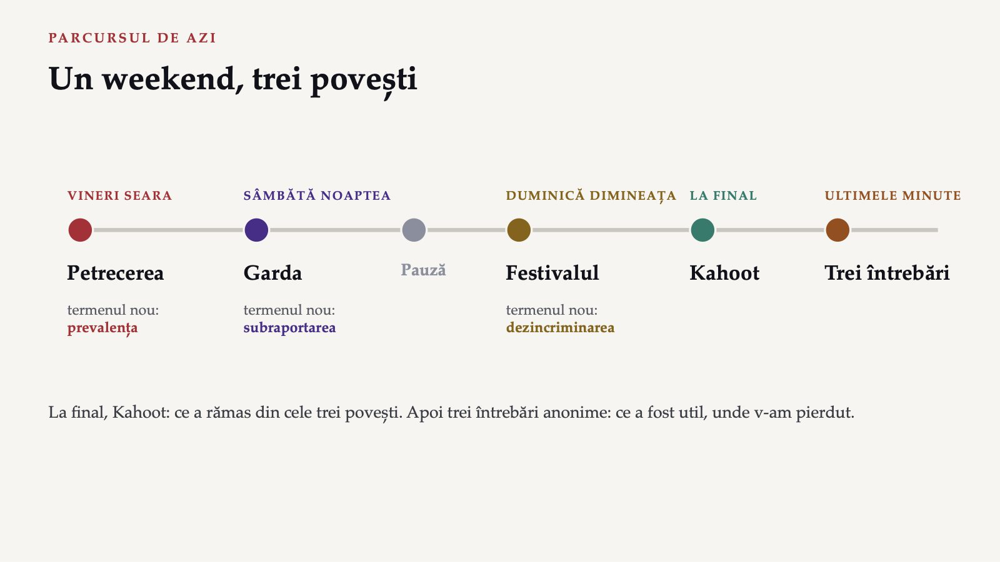
5 / 41O petrecere în Mărăști
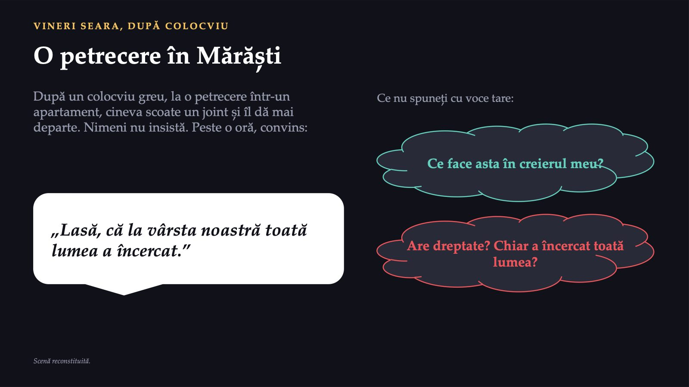
6 / 41Din 100 de persoane care au consumat vreodată canabis, câte vor deveni, după estimări, dependente la un moment dat în viață?
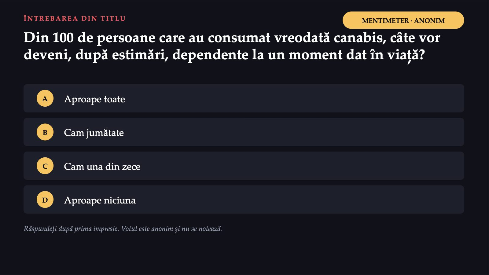
7 / 41Cam 9 din 100, după estimări. Cei mai mulți nu devin dependenți.
![UN RĂSPUNS PROVIZORIU · CREIERUL VOSTRU Cam 9 din 100, după estimări. Cei mai mulți nu devin dependenți. sistemul care folosește dopamina Un sistem cu rol-cheie în recompensă Aproape toate drogurile de abuz îl activează. Recompensele naturale încetează să-l activeze după consum repetat; drogurile, nu. Canabisul, mai puțin La om, efectul asupra dopaminei pare mai mic decât la amfetamină. O minoritate ajunge la consum cu risc ridicat sau la dependență. 9 din 100, după estimările unei mari anchete americane, cu date vechi de peste două decenii: dependență la un moment dat în viață, la cei care au consumat vreodată canabis. Schemă simplificată, desenată pentru curs.](diapozitive/C02/008.jpg) 8 / 41
8 / 41Riscul se descrie pentru o populație. Nu se prezice pentru o persoană.
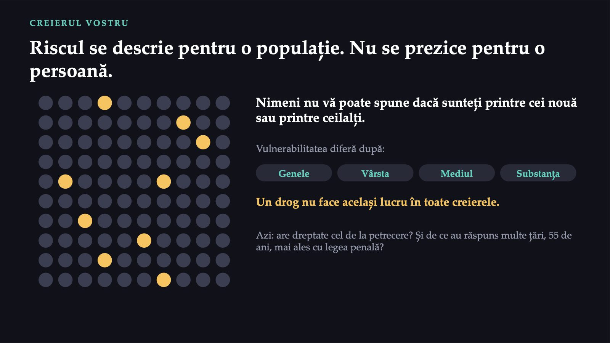
9 / 41Un cuvânt: cum arată, în mintea voastră, „un consumator de droguri”?
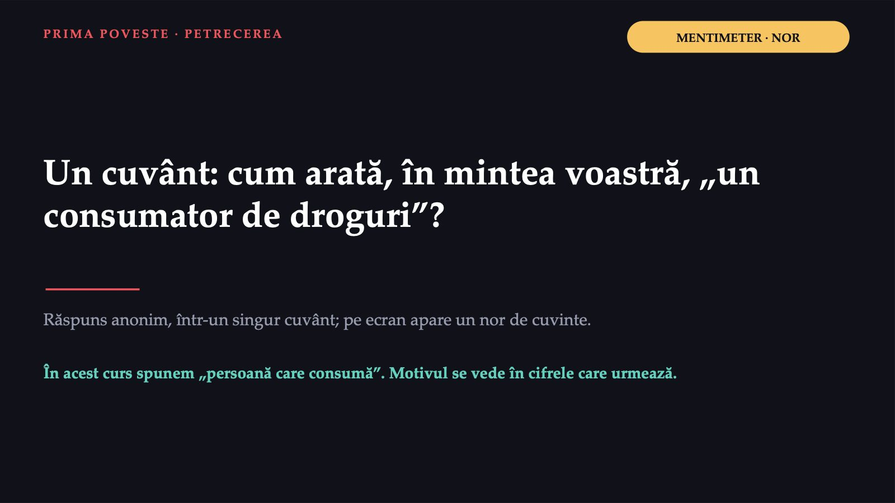
10 / 41Din 100 de tineri români de 15–34 de ani, câți…
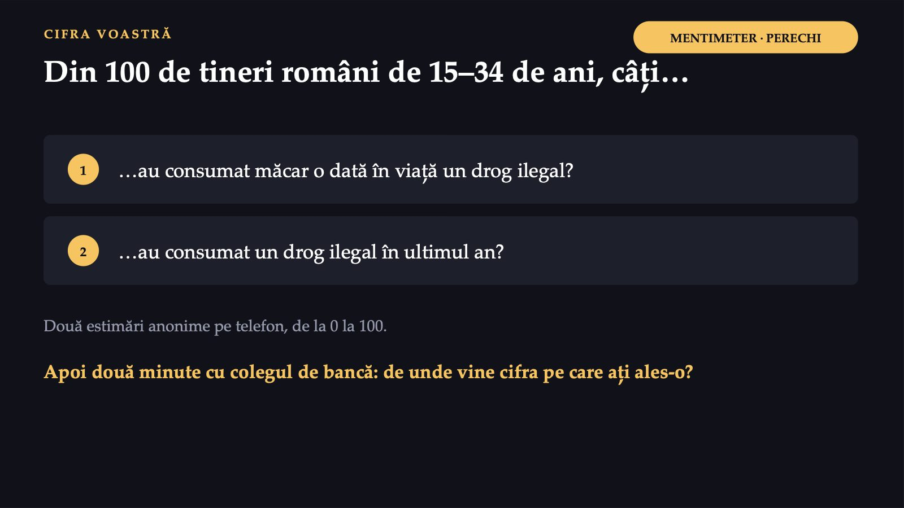
11 / 41Zece din unsprezece tineri: niciun drog ilegal în ultimul an
![ANCHETA NAȚIONALĂ · 2024 · TINERII DE 15–34 DE ANI Zece din unsprezece tineri: niciun drog ilegal în ultimul an măcar o dată în viață 18,5% aproape unul din cinci în ultimul an 9,1% aproximativ unul din unsprezece în ultima lună 6,2% aproximativ unul din șaisprezece Comparați cu cifra voastră. Dacă ați ales una mai mare: auziți despre cei care consumă, nu despre cei care nu consumă. Sursa: ANPCDDA, Raportul național 2025 (date pentru 2024); interviuri față în față, cu un operator de teren, la oameni aleși la întâmplare din populația domiciliată în România, cu promisiunea anonimatului.](diapozitive/C02/012.jpg) 12 / 41
12 / 41Sub media europeană, după ce declară oamenii
![ADULȚII, EUROPA, ELEVII Sub media europeană, după ce declară oamenii Canabis în ultimul an · adulți de 15–64 de ani România 2,3% Media UE 8,7% de aproape patru ori mai mult ESPAD · elevi de 16 ani · 8 543 de elevi din România România 2019 9,5% România 2024 6,2% Europa ≈ 13% un drog ilicit, măcar o dată Adulții din România: 12,6% măcar o dată, 5,7% în ultimul an; canabis, 6,7% măcar o dată. ESPAD: elevi de liceu, nu studenți. Surse: ANPCDDA, Raportul național 2025; EUDA, European Drug Report 2026; ESPAD 2024.](diapozitive/C02/013.jpg) 13 / 41
13 / 4118,5%
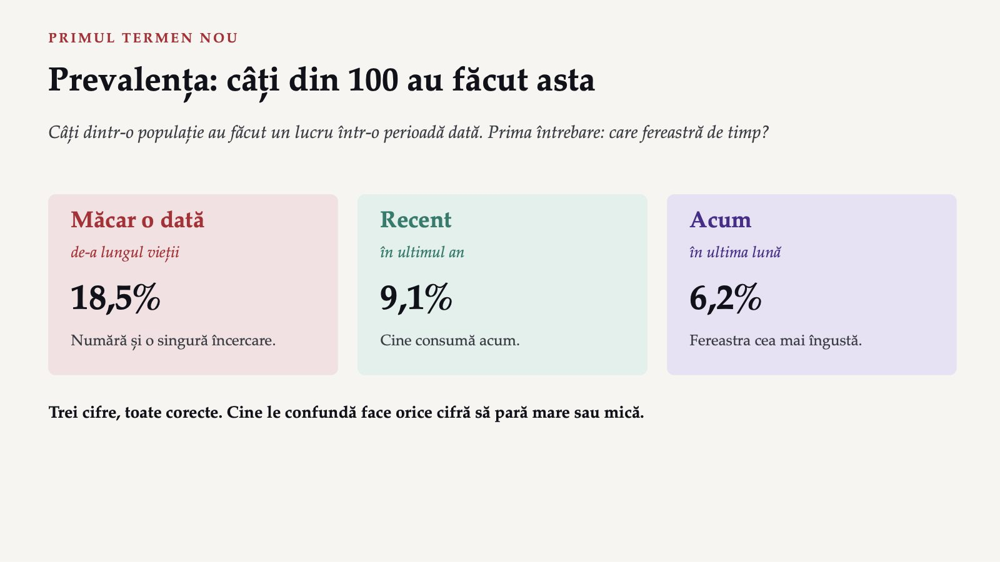
14 / 41Rata consumului de substanțe interzise la nivel European. România este una dintre țările care stă cel mai bine din Uniunea Europeană
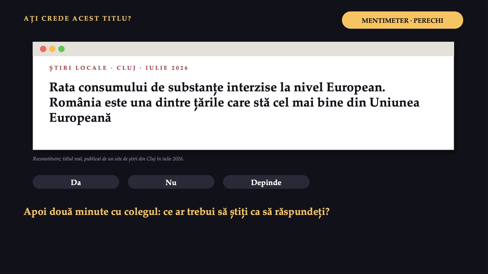
15 / 41Depinde: s-a măsurat ce acceptă oamenii să declare
![RĂSPUNSUL Depinde: s-a măsurat ce acceptă oamenii să declare Titlul este real, iar anchetele îl susțin doar în parte, la canabis. Dar cum se face ancheta? Imaginați-vă un interviu Un necunoscut vă întreabă față în față, la domiciliu, poate cu părinții alături. Legea Deținerea pentru consum propriu e infracțiune: este de așteptat ca unii să răspundă „nu”. Cine lipsește Cei fără domiciliu: o anchetă în populația domiciliată nu îi cuprinde, prin construcție. Sigur: declarăm mai puțin decât media europeană. Nesigur: cu cât. Este de așteptat ca cifra reală să fie ceva mai mare, nu mai mică.](diapozitive/C02/016.jpg) 16 / 41
16 / 41Presiunea care nu există și întrebarea care vă lipsește
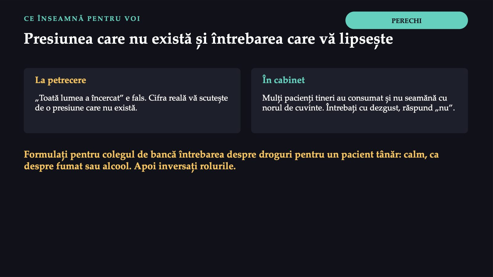
17 / 41Ora trei, la Primiri Urgențe
![O sală de reanimare pregătită pentru următorul pacient Foto: Jacob Windham · CC BY 2.0 · Wikimedia Commons A DOUA POVESTE · GARDA Ora trei, la Primiri Urgențe Sâmbătă noaptea, sunteți student în stagiu. Ambulanța aduce un tânăr de douăzeci și trei de ani, găsit pe o bancă lângă un festival. Nu răspunde, respiră rar și superficial, pupilele cât un vârf de ac. Un prieten, speriat: „A băut și a luat ceva să se calmeze, o pastilă de la cineva.” Echipa intervine; tânărul își revine. Ce s-a întâmplat în creierul lui?](diapozitive/C02/018.jpg) 18 / 41
18 / 41Fiecare substanță, singură, suportabilă. Împreună, nu.
![CREIERUL VOSTRU · RESPIRAȚIA Fiecare substanță, singură, suportabilă. Împreună, nu. partea din creier care reglează respirația Supradoza de opioide (OMS): trei semne împreună 1 Pupile punctiforme 2 Pierderea conștienței 3 Respirație dificilă Pupilele punctiforme orientează spre un opioid. Opioidele, alcoolul și pastilele „de calmat”, precum benzodiazepinele, deprimă împreună respirația. Și în România, opiaceele cauzează cele mai multe decese asociate direct consumului, uneori împreună cu benzodiazepine (RN 2025, p. 100). Prima ședință: circuitul recompensei explică obsesia. Azi: de ce un drog poate ucide într-o noapte, chiar la primul consum. Schemă simplificată, desenată pentru curs.](diapozitive/C02/019.jpg) 19 / 41
19 / 41Dacă tânărul nu și-ar fi revenit, ar fi apărut decesul lui în statistica națională?
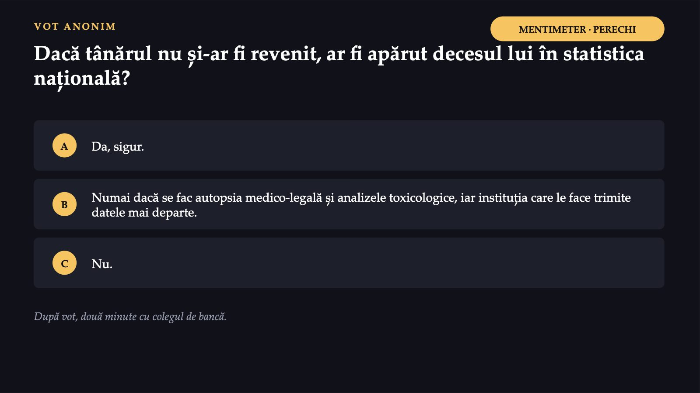
20 / 41B. Numai dacă trece prin toate verigile.
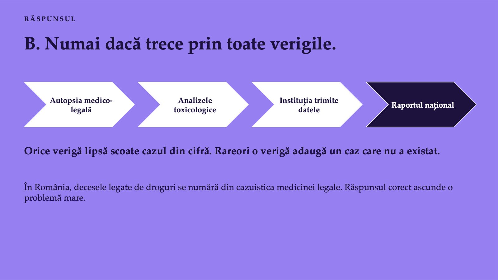
21 / 4147
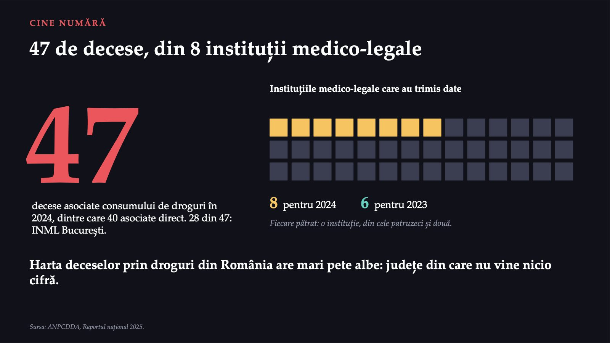
22 / 412 995
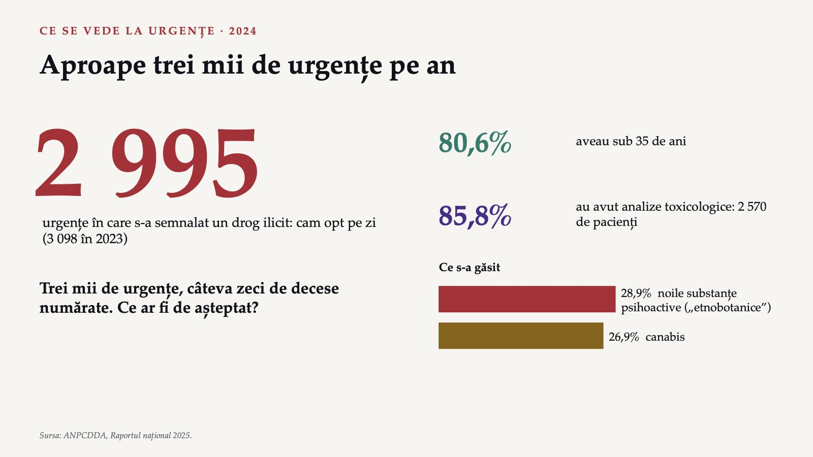
23 / 41≈ 320
![O COMPARAȚIE CU EUROPA · CALCUL ORIENTATIV Ne-am aștepta la aproximativ 320. Am raportat 40 direct. ≈ 320 așteptate, la frecvența medie din UE 40 raportate direct (47 cu cele indirecte) Calculul 7 589 decese prin supradoză în UE în 2024: o estimare minimă 1 din 24 europeni locuiește în România (≈ 19 milioane din 449) Diferența: de aproximativ opt ori. Față de cele 40 de decese asociate direct. Definițiile nu se suprapun perfect, dar diferența e prea mare ca să țină numai de ele. Calcul orientativ; sursa fiecărei cifre este în note.](diapozitive/C02/024.jpg) 24 / 41
24 / 41Trei explicații care nu se exclud
![PERECHI DE UNDE VINE DIFERENȚA? Trei explicații care nu se exclud Mai puțin consum declarat Anchetele o arată; și la noi, opiaceele cauzează cele mai multe decese directe. Servicii care salvează mai mulți Tratament și reducerea riscurilor. Nu avem date care să o susțină. Nu numărăm la fel de bine În 2024, numai câteva instituții au trimis datele. Două minute cu colegul: ce date v-ar trebui ca să alegeți? Nu se poate spune cât ține de fiecare. Dar 47 de decese, din 8 instituții, nu dovedesc că România „stă bine”.](diapozitive/C02/025.jpg) 25 / 41
25 / 41Subraportarea: s-a întâmplat, dar nu s-a numărat
![AL DOILEA TERMEN NOU Subraportarea: s-a întâmplat, dar nu s-a numărat Cazuri reale nedescoperite, înregistrate greșit sau netrimise. Cifra oficială iese mai mică decât realitatea. Primul tânăr ajunge la o instituție medico-legală care trimite datele. Al doilea tânăr moare într-un județ care nu trimite nimic. Ambii sunt la fel de morți. Doar unul e numărat. Ați crede, a doua oară, că „România stă cel mai bine”, la decese? Cifra de 47 arată bine tocmai pentru că a fost măsurată prost. Valori ipotetice: aceeași noapte, același amestec de alcool și pastile.](diapozitive/C02/026.jpg) 26 / 41
26 / 41Statistica nu cade din cer. O parte începe în fișa voastră.
![CE ÎNSEAMNĂ PENTRU VOI, LA GARDĂ Statistica nu cade din cer. O parte începe în fișa voastră. FIȘA PACIENTULUI · UPU Consum de substanțe întrebat fără judecată; notat ce s-a aflat Analize toxicologice cerute când sunt indicate: o confirmare obiectivă Cauza decesului „stop cardiorespirator” cauza reală Formular reconstituit și simplificat. „Stop cardiorespirator”: așa moare oricine. O cauză vagă șterge drogul din statistică. Cu el dispare argumentul pentru servicii care ar fi salvat următorul pacient.](diapozitive/C02/027.jpg) 27 / 41
27 / 41Pauză
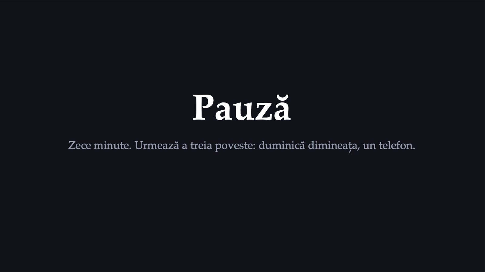
28 / 41Telefonul de duminică dimineață
![JOC DE ROL · 2 VOLUNTARI A TREIA POVESTE · FESTIVALUL Telefonul de duminică dimineață apel de intrare R Radu coleg de cameră Colegul vostru din cămin, student la Farmacie. Aseară, la intrarea într-un festival, poliția l-a găsit cu puțin canabis, pentru el. Are un dosar. Nu e dependent; fumează rar. „Mă exmatriculează? Fac închisoare? Ce le spun părinților?” Doi voluntari, trei minute: colegul speriat și studentul la medicină. Jucați un personaj, nu pe voi înșivă. Scenă reconstituită; numele este fictiv.](diapozitive/C02/029.jpg) 29 / 41
29 / 41Ce riscă, după lege, colegul vostru?
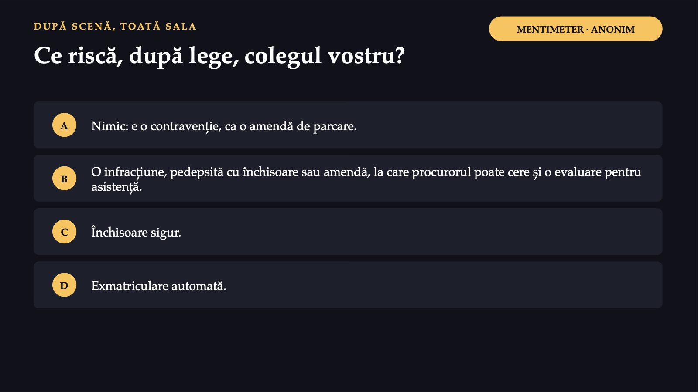
30 / 41B. O infracțiune.
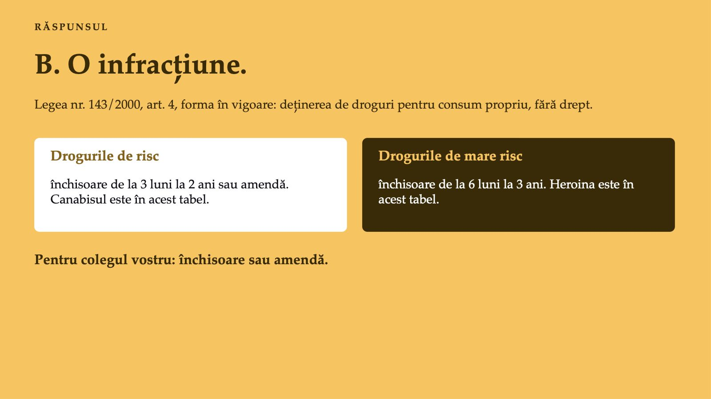
31 / 41Legea are și o ușă laterală
![CE MAI SPUNE LEGEA Legea are și o ușă laterală Evaluarea Procurorul poate dispune evaluarea, pentru circuitul integrat de asistență: lângă dosar, o întrebare de sănătate. Obligatorie la minori; o face centrul de prevenire, evaluare și consiliere antidrog, cu consimțământul persoanei. Art. 20: dacă programul e respectat, instanța poate renunța la pedeapsă sau o poate amâna. 374 de persoane condamnate în 2024 pentru deținere pentru consum propriu. Dosarul nu e o formalitate. Exmatricularea Nu e „automată”: depinde de dosar și de regulamentele universității. Ce i-ați putea spune: „E o infracțiune, dar procurorul poate dispune o evaluare care să te ducă spre asistență. Dacă intri în program și îl respecți, instanța poate renunța la pedeapsă sau o poate amâna. Vorbește cu un avocat.”](diapozitive/C02/032.jpg) 32 / 41
32 / 41Creierul pe care legea nu-l vede
![PERECHI CREIERUL ȘI LEGEA Creierul pe care legea nu-l vede Cine a încercat o dată Dosarul penal poate fi singura urmare serioasă a unei seri la festival. Cine nu se mai poate opri Un dosar penal nu tratează nimic din ce s-a schimbat în creierul lui. La canabis, după estimări, cam 9 din 100 vor deveni dependenți la un moment dat în viață. Articolul 4 nu face această deosebire; articolele 19 și 20 sunt punctele în care legea întreabă, totuși, ce se petrece cu persoana. Două minute cu colegul: dacă dependența e o problemă de sănătate, de ce răspunsul de bază e penal?](diapozitive/C02/033.jpg) 33 / 41
33 / 41„Inamicul public numărul unu”
![17 IUNIE 1971 · CASA ALBĂ „Inamicul public numărul unu” Președintele Richard Nixon declară abuzul de droguri inamicul public și cere o ofensivă nouă și totală. 1971 155 mil. $ în plus: bugetul ar fi trecut de 350 de milioane, pentru poliție și pentru tratament. 2010 După 40 de ani, presa face bilanțul. 2026 55 de ani. „Războiul” evocă poliția, nu clinica. Citatul atribuit unui consilier al lui Nixon nu rezistă ca dovadă. Aplicarea inegală a legii se arată cu date, iar datele există. „A eșuat” e o judecată, verificată pe date în ședințele următoare.](diapozitive/C02/034.jpg) 34 / 41
34 / 41AP IMPACT: After 40 years, $1 trillion, US War on Drugs has failed to meet any of its goals
 35 / 41
35 / 41Depinde: cifra are un autor și o metodă
![RĂSPUNSUL Depinde: cifra are un autor și o metodă Limba Un „trillion” american e o mie de miliarde: în română, un bilion. Cine a calculat Jurnaliștii AP, din mai multe surse, pe aproximativ 40 de ani; nu un total oficial. Între componente: 121 de miliarde pentru arestarea a peste 37 de milioane de persoane (≈ 10 milioane pentru canabis), 450 de miliarde pentru încarcerare. Ce lipsește „Nu și-a atins niciunul dintre obiective”: o judecată argumentată, nu o măsurătoare. Se citează: „după un calcul al agenției AP din 2010”.](diapozitive/C02/036.jpg) 36 / 41
36 / 413,64
![CINE ESTE ARESTAT · SUA, 2010–2018 Același canabis, alte dosare 3,64 ori mai multe șanse de arestare pentru posesie de canabis: o persoană de culoare față de una albă Consumă canabis persoane albe persoane de culoare în proporții asemănătoare, potrivit ACLU Sunt arestați pentru posesie persoane albe persoane de culoare Consum asemănător, potrivit ACLU; riscul de a fi arestați pentru posesie, nu. Legea se aplică acolo unde se uită poliția. Pentru România, date comparabile nu avem. Sursa: ACLU, aprilie 2020: raportul unei organizații cu poziție declarată, nu o statistică oficială.](diapozitive/C02/037.jpg) 37 / 41
37 / 41Dezincriminarea: nu mai e penal, dar nici nu e voie
![AL TREILEA TERMEN NOU Dezincriminarea: nu mai e penal, dar nici nu e voie Infracțiune Pedeapsă penală. Aici e România azi, cu evaluarea (art. 19) și art. 20. Dezincriminare Pedepsele penale se elimină; pot rămâne sancțiuni civile sau administrative (Scheim și colab., 2020). Legalizare Cadru legal pentru consum, producție și vânzare (reglementare legală). Evaluarea nu oprește dosarul penal; îi adaugă o întrebare de sănătate. Data viitoare: Portugalia. Ce date ne-ar trebui ca să știm dacă schimbarea a funcționat?](diapozitive/C02/038.jpg) 38 / 41
38 / 41Ce faceți diferit de mâine
![ÎN PRACTICĂ Ce faceți diferit de mâine 1 „Toată lumea ia”? În ultimul an, unul din unsprezece tineri. 2 La orice cifră: ce fereastră, cine a numărat, cât de complet. 3 La gardă: întrebați fără judecată, notați în fișă, cereți analize. 4 Prieten cu dosar: infracțiune, dar și o posibilă evaluare spre asistență; dacă respectă programul, instanța poate renunța la pedeapsă sau o poate amâna. 5 Titlu cu cifră uriașă: cine a calculat-o și cum? Un pacient judecat nu mai spune ce a consumat; medicul lucrează apoi pe întuneric.](diapozitive/C02/039.jpg) 39 / 41
39 / 41Ce a rămas din cele trei povești
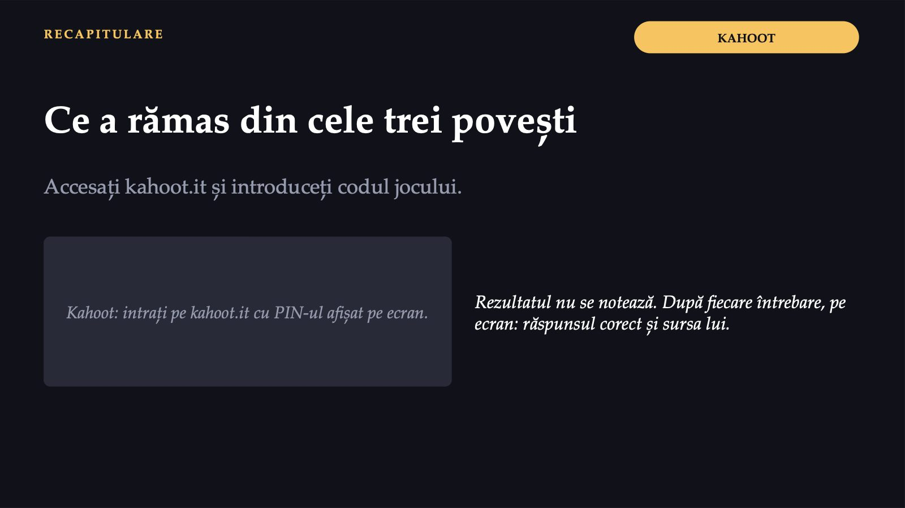
40 / 41Trei întrebări pentru titular
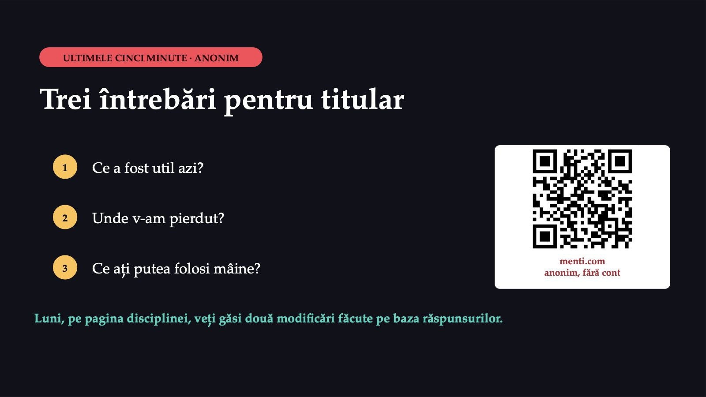
41 / 41Săgeți sau spațiu: navigare · O: vedere de ansamblu · N: notele prezentatorului · F: ecran complet · Esc: închidere